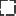

<!doctype html>
<html lang="en">
    <head>
        <meta charset="utf-8">
        <meta http-equiv="X-UA-Compatible" content="IE=edge">
        <meta name="viewport" content="initial-scale=1,user-scalable=no,maximum-scale=1,width=device-width">
        <meta name="mobile-web-app-capable" content="yes">
        <meta name="apple-mobile-web-app-capable" content="yes">
        <link rel="stylesheet" href="css/leaflet.css">
        <link rel="stylesheet" href="css/qgis2web.css"><link rel="stylesheet" href="css/fontawesome-all.min.css">
        <style>
        html, body, #map {
            width: 100%;
            height: 100%;
            padding: 0;
            margin: 0;
        }
        </style>
        <title>Webmap Testi</title>
    </head>
    <body>
        <div id="map">
        </div>
        <script src="js/qgis2web_expressions.js"></script>
        <script src="js/leaflet.js"></script>
        <script src="js/leaflet.rotatedMarker.js"></script>
        <script src="js/leaflet.pattern.js"></script>
        <script src="js/leaflet-hash.js"></script>
        <script src="js/Autolinker.min.js"></script>
        <script src="js/rbush.min.js"></script>
        <script src="js/labelgun.min.js"></script>
        <script src="js/labels.js"></script>
        <script src="js/leaflet.wms.js"></script>
        <script src="data/Hankealue_1.js"></script>
        <script src="data/Verkkoliitynt_2.js"></script>
        <script src="data/Tuulivoimalat_3.js"></script>
        <script src="data/Etisyysvyhykkeet2km5km10km_4.js"></script>
        <script>
        var map = L.map('map', {
            zoomControl:true, maxZoom:16, minZoom:7
        }).fitBounds([[62.90406410421888,23.266563479260586],[63.36129979413603,24.919954232220206]]);
        var hash = new L.Hash(map);
        map.attributionControl.setPrefix('<a href="https://github.com/tomchadwin/qgis2web" target="_blank">qgis2web</a> &middot; <a href="https://leafletjs.com" title="A JS library for interactive maps">Leaflet</a> &middot; <a href="https://qgis.org">QGIS</a>');
        var autolinker = new Autolinker({truncate: {length: 30, location: 'smart'}});
        var bounds_group = new L.featureGroup([]);
        function setBounds() {
        }
        map.createPane('pane_OpenStreetMapWMSbyterrestris_0');
        map.getPane('pane_OpenStreetMapWMSbyterrestris_0').style.zIndex = 400;
        var layer_OpenStreetMapWMSbyterrestris_0 = L.WMS.layer("https://ows.terrestris.de/osm/service", "OSM-WMS", {
            pane: 'pane_OpenStreetMapWMSbyterrestris_0',
            format: 'image/png',
            uppercase: true,
            transparent: true,
            continuousWorld : true,
            tiled: true,
            info_format: 'text/html',
            opacity: 1,
            identify: false,
            attribution: '',
        });
        map.addLayer(layer_OpenStreetMapWMSbyterrestris_0);
        function pop_Hankealue_1(feature, layer) {
            var popupContent = '<table>\
                    <tr>\
                        <th scope="row">Nimi</th>\
                        <td>' + (feature.properties['Nimi'] !== null ? autolinker.link(feature.properties['Nimi'].toLocaleString()) : '') + '</td>\
                    </tr>\
                    <tr>\
                        <th scope="row">Pinta-ala</th>\
                        <td>' + (feature.properties['Pinta-ala'] !== null ? autolinker.link(feature.properties['Pinta-ala'].toLocaleString()) : '') + '</td>\
                    </tr>\
                </table>';
            layer.bindPopup(popupContent, {maxHeight: 400});
        }

        function style_Hankealue_1_0() {
            return {
                pane: 'pane_Hankealue_1',
                opacity: 1,
                color: 'rgba(0,0,0,1.0)',
                dashArray: '10,5,1,5,1,5',
                lineCap: 'butt',
                lineJoin: 'miter',
                weight: 4.0, 
                fill: true,
                fillOpacity: 1,
                fillColor: 'rgba(108,143,164,0.1803921568627451)',
                interactive: true,
            }
        }
        map.createPane('pane_Hankealue_1');
        map.getPane('pane_Hankealue_1').style.zIndex = 401;
        map.getPane('pane_Hankealue_1').style['mix-blend-mode'] = 'normal';
        var layer_Hankealue_1 = new L.geoJson(json_Hankealue_1, {
            attribution: '',
            interactive: true,
            dataVar: 'json_Hankealue_1',
            layerName: 'layer_Hankealue_1',
            pane: 'pane_Hankealue_1',
            onEachFeature: pop_Hankealue_1,
            style: style_Hankealue_1_0,
        });
        bounds_group.addLayer(layer_Hankealue_1);
        map.addLayer(layer_Hankealue_1);
        function pop_Verkkoliitynt_2(feature, layer) {
            var popupContent = '<table>\
                    <tr>\
                        <th scope="row">Nimi</th>\
                        <td>' + (feature.properties['Nimi'] !== null ? autolinker.link(feature.properties['Nimi'].toLocaleString()) : '') + '</td>\
                    </tr>\
                    <tr>\
                        <th scope="row">Pituus</th>\
                        <td>' + (feature.properties['Pituus'] !== null ? autolinker.link(feature.properties['Pituus'].toLocaleString()) : '') + '</td>\
                    </tr>\
                    <tr>\
                        <th scope="row">Jännite</th>\
                        <td>' + (feature.properties['Jännite'] !== null ? autolinker.link(feature.properties['Jännite'].toLocaleString()) : '') + '</td>\
                    </tr>\
                    <tr>\
                        <th scope="row">Toteutus</th>\
                        <td>' + (feature.properties['Toteutus'] !== null ? autolinker.link(feature.properties['Toteutus'].toLocaleString()) : '') + '</td>\
                    </tr>\
                </table>';
            layer.bindPopup(popupContent, {maxHeight: 400});
        }

        function style_Verkkoliitynt_2_0() {
            return {
                pane: 'pane_Verkkoliitynt_2',
                opacity: 1,
                color: 'rgba(72,123,182,1.0)',
                dashArray: '',
                lineCap: 'square',
                lineJoin: 'bevel',
                weight: 3.0,
                fillOpacity: 0,
                interactive: true,
            }
        }
        map.createPane('pane_Verkkoliitynt_2');
        map.getPane('pane_Verkkoliitynt_2').style.zIndex = 402;
        map.getPane('pane_Verkkoliitynt_2').style['mix-blend-mode'] = 'normal';
        var layer_Verkkoliitynt_2 = new L.geoJson(json_Verkkoliitynt_2, {
            attribution: '',
            interactive: true,
            dataVar: 'json_Verkkoliitynt_2',
            layerName: 'layer_Verkkoliitynt_2',
            pane: 'pane_Verkkoliitynt_2',
            onEachFeature: pop_Verkkoliitynt_2,
            style: style_Verkkoliitynt_2_0,
        });
        bounds_group.addLayer(layer_Verkkoliitynt_2);
        function pop_Tuulivoimalat_3(feature, layer) {
            var popupContent = '<table>\
                    <tr>\
                        <th scope="row">Tunnus</th>\
                        <td>' + (feature.properties['Tunnus'] !== null ? autolinker.link(feature.properties['Tunnus'].toLocaleString()) : '') + '</td>\
                    </tr>\
                </table>';
            layer.bindPopup(popupContent, {maxHeight: 400});
        }

        function style_Tuulivoimalat_3_0() {
            return {
                pane: 'pane_Tuulivoimalat_3',
                radius: 5.2,
                opacity: 1,
                color: 'rgba(128,17,25,1.0)',
                dashArray: '',
                lineCap: 'butt',
                lineJoin: 'miter',
                weight: 2.0,
                fill: true,
                fillOpacity: 1,
                fillColor: 'rgba(219,30,42,1.0)',
                interactive: true,
            }
        }
        map.createPane('pane_Tuulivoimalat_3');
        map.getPane('pane_Tuulivoimalat_3').style.zIndex = 403;
        map.getPane('pane_Tuulivoimalat_3').style['mix-blend-mode'] = 'normal';
        var layer_Tuulivoimalat_3 = new L.geoJson(json_Tuulivoimalat_3, {
            attribution: '',
            interactive: true,
            dataVar: 'json_Tuulivoimalat_3',
            layerName: 'layer_Tuulivoimalat_3',
            pane: 'pane_Tuulivoimalat_3',
            onEachFeature: pop_Tuulivoimalat_3,
            pointToLayer: function (feature, latlng) {
                var context = {
                    feature: feature,
                    variables: {}
                };
                return L.circleMarker(latlng, style_Tuulivoimalat_3_0(feature));
            },
        });
        bounds_group.addLayer(layer_Tuulivoimalat_3);
        function pop_Etisyysvyhykkeet2km5km10km_4(feature, layer) {
            var popupContent = '<table>\
                    <tr>\
                        <th scope="row">Etäisyys</th>\
                        <td>' + (feature.properties['Etäisyys'] !== null ? autolinker.link(feature.properties['Etäisyys'].toLocaleString()) : '') + '</td>\
                    </tr>\
                </table>';
            layer.bindPopup(popupContent, {maxHeight: 400});
        }

        function style_Etisyysvyhykkeet2km5km10km_4_0() {
            return {
                pane: 'pane_Etisyysvyhykkeet2km5km10km_4',
                opacity: 1,
                color: 'rgba(35,35,35,1.0)',
                dashArray: '10,5',
                lineCap: 'square',
                lineJoin: 'bevel',
                weight: 2.0,
                fillOpacity: 0,
                interactive: true,
            }
        }
        map.createPane('pane_Etisyysvyhykkeet2km5km10km_4');
        map.getPane('pane_Etisyysvyhykkeet2km5km10km_4').style.zIndex = 404;
        map.getPane('pane_Etisyysvyhykkeet2km5km10km_4').style['mix-blend-mode'] = 'normal';
        var layer_Etisyysvyhykkeet2km5km10km_4 = new L.geoJson(json_Etisyysvyhykkeet2km5km10km_4, {
            attribution: '',
            interactive: true,
            dataVar: 'json_Etisyysvyhykkeet2km5km10km_4',
            layerName: 'layer_Etisyysvyhykkeet2km5km10km_4',
            pane: 'pane_Etisyysvyhykkeet2km5km10km_4',
            onEachFeature: pop_Etisyysvyhykkeet2km5km10km_4,
            style: style_Etisyysvyhykkeet2km5km10km_4_0,
        });
        bounds_group.addLayer(layer_Etisyysvyhykkeet2km5km10km_4);
            var title = new L.Control();
            title.onAdd = function (map) {
                this._div = L.DomUtil.create('div', 'info');
                this.update();
                return this._div;
            };
            title.update = function () {
                this._div.innerHTML = '<h2>Webmap Testi</h2>';
            };
            title.addTo(map);
        var baseMaps = {};
        L.control.layers(baseMaps,{' Etäisyysvyöhykkeet 2 km, 5 km, 10 km': layer_Etisyysvyhykkeet2km5km10km_4,' Tuulivoimalat': layer_Tuulivoimalat_3,' Verkkoliityntä': layer_Verkkoliitynt_2,' Hankealue': layer_Hankealue_1,"OpenStreetMap WMS - by terrestris": layer_OpenStreetMapWMSbyterrestris_0,},{collapsed:false}).addTo(map);
        setBounds();
        resetLabels([layer_Tuulivoimalat_3,layer_Etisyysvyhykkeet2km5km10km_4]);
        map.on("zoomend", function(){
            resetLabels([layer_Tuulivoimalat_3,layer_Etisyysvyhykkeet2km5km10km_4]);
        });
        map.on("layeradd", function(){
            resetLabels([layer_Tuulivoimalat_3,layer_Etisyysvyhykkeet2km5km10km_4]);
        });
        map.on("layerremove", function(){
            resetLabels([layer_Tuulivoimalat_3,layer_Etisyysvyhykkeet2km5km10km_4]);
        });
        </script>
    </body>
</html>
